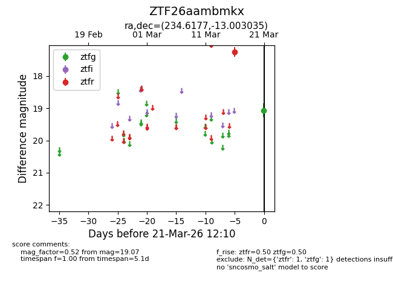
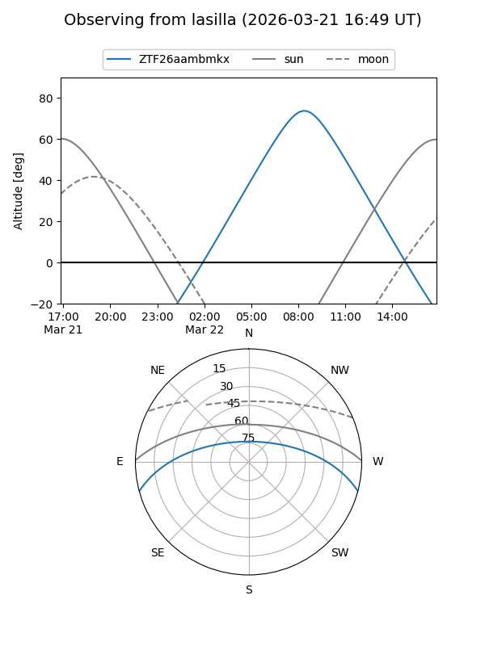
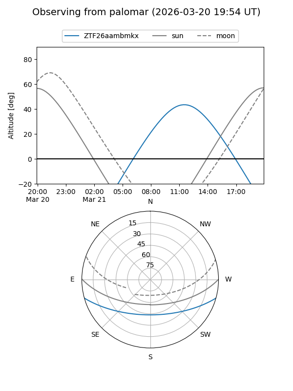

ZTF26aambmkx
Target ZTF26aambmkx at 2026-03-21 12:12
Aliases and brokers:
FINK: link
Lasair: link
ALeRCE: link
alt names
ZTF26aambmkx (ztf,fink_ztf)
Coordinates:
equatorial (ra, dec) = 234.6177,-13.00303
equatorial (HMS+DMS) = 15:38:28.24,-13:00:10.92
galactic (l, b) = (353.6030,+32.97521)
Flags:
Photometry:
last ztfg=19.07, ztfr=17.25
1 ztfg, 1 ztfr detections
Lightcurve

Visibility


Additional plots